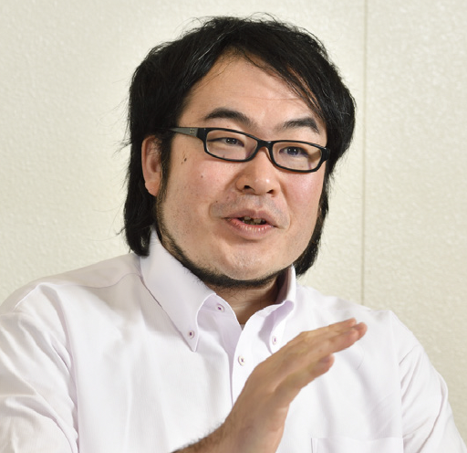

Hiroshi Yamada
|

|
Associate Professor
Advanced Info. Tech. & Computer Science
Tokyo University of Agriculture and Technology (TUAT)
521, Building 12,
2-24-16 Nakacho, Koganei-shi, Tokyo
hiroshiy [at] cc.tuat.ac.jp
Tel/Fax: +81-42-388-7154
Research Group
Japanese version is here.
|
Short Bio
Hiroshi Yamada heads the Advanced Systems Group of TUAT. His research interest lies primarily in system software mechanisms for enhancing the performance and dependability of computer systems. Current hardware and software are complicated enough to make it difficult and almost impossible to eliminate all the faults in their development phase. Such faults trigger unstable behaviors in computer systems, including significant performance degradation, system hijacking, and partially-incorrect functioning. The trend of in-memory processing such as machine learning and graph analytics makes it worse due to their large memory footprints (thousands or hundreds of gigabytes level); the standard recovery methods like the reboot and replication cause significant downtime for the restoration and unacceptable large memory space overheads.
To address these challenges, he is exploring ways to enforce system software, including operating systems, hypervisors, and databases, to handle various failures gracefully at runtime. He takes an approach (i) to finding problematic behaviors of the real-world system software, (ii) to designing novel software mechanisms to remedy the problems, (iii) to prototyping them on open-sourced system software, and (iv) quantitatively showing the effectiveness of the prototypes.
In the past, Hiroshi was a project assistant professor at Keio University from 2009 to 2012. Also, he was a visiting scholar at Duke University in 2012. He received his Ph.D. in computer science from Keio University in 2009, and his B.E. and M.E. in computer science from The University of Electro-Communications in 2004 and 2006, respectively.
Publications (selected) (All Publications: here or pdf)
- DBMS-asssisted Live Migration of Virtual Machines
Kota Asanuma, and Hiroshi Yamada,
IEEE Trans. on Computers IEEE TC, To appear.
- Graceful ECC-uncorrectable Error Handling in the Operating System Kernel
T.Iguchi, and H.Yamada, ISSRE '22.
- A Multi-variant Execution Environment for Securing In-memory KVSes
S.Enomoto, and H.Yamada, EDCC '22.
Distinguished Paper.
- Hardening In-memory Key-value Stores against ECC-uncorrectable Memory Errors
T.Shimomura, and H.Yamada, DSN '22.
- GLoop: An Event-driven Runtime for Consolidating GPGPU Applications
Y.Suzuki, H.Yamada, S.Kato, and K.Kono, SoCC '17.
- GPUvm: Why Not Virtualizing GPUs at the Hypervisor?
Y.Suzuki, S.Kato, H.Yamada, and K.Kono, USENIX ATC '14.
- Towards fast OS rejuvenation: An experimental evaluation of fast OS reboot techniques
A.Bovenzi, J.Alonso, H.Yamada, S.Russo, and K.S.Trivedi, ISSRE '13.
- Traveling Forward in Time to Newer Operating Systems using ShadowReboot
H.Yamada, and K.Kono, VEE '13.
- Phase-based Reboot: Reusing Operating System Execution Phases for Cheap Reboot-based Recovery
K.Yamakita, H.Yamada, and K.Kono, DSN '11.
- Enforcing Appropriate Process Execution for Exploiting Idle Resource from Outside Operating Systems
Y.Abe, H.Yamada, and K.Kono, EuroSys '08.
- FoxyTechnique: Tricking Operating System Policies with a Virtual Machine Monitor
H.Yamada, and K.Kono, VEE '07.
Teaching
- Spring 2013〜: Operating Systems
- Fall 2013〜: Databases
- Spring 2013〜: Advanced Software Architecture
Services
Members
- Association of Computing Machinery
- USENIX
- Institue of Electrical and Electronics Engineers
Program Committees
- The 29th IEEE Int'l Conf. on Embedded and Real-Time Computing Systems and Applications (RTCSA '23), General chair
- The 11th ACM SIGOPS Asia-Pacific Workshop on Systems (APSys '20), Registration chair
- The 24th IEEE Int'l Conf. on Embedded and Real-Time Computing Systems and Applications (RTCSA '18), Financial chair
- The 6th ACM SIGOPS Asia-Pacific Workshop on Systems (APSys '15), Local arrangement chair
- The 21st IEEE Pacific Rim Int'l Symp. on Dependable Computing (PRDC '15), Publicity co-chairs
- Int'l Workshop on Software Aging and Rejuvenation (WoSAR), Program Committee 2013〜, etc.
|